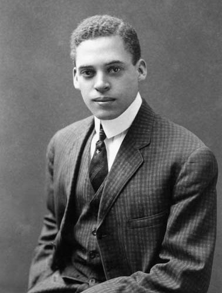

Ernest Everett Just

Ernest Everett Just foi um renomado biólogo afro-americano cujos estudos em embriologia celular foram fundamentais para o entendimento do papel do núcleo na divisão e desenvolvimento celular. Ele desafiou concepções da época e mostrou como fatores externos influenciam a vida das células. Just foi pioneiro no estudo da fertilização e desenvolvimento inicial dos organismos marinhos.
Principais Contribuições
- Pesquisa inovadora sobre embriologia celular e desenvolvimento inicial dos organismos.
- Descobriu a importância do núcleo na fertilização e no desenvolvimento celular.
- Foi um dos primeiros cientistas a propor a influência do ambiente sobre o comportamento das células.
- Contribuiu significativamente para a biologia marinha e os estudos sobre fertilização.
Saiba mais
Voltar